Метод билинейного преобразования используется когда известна передаточная ф-ция аналогового фильтра-прототипа, не требует использование преобразования Лапласса и Z-преобразования
Билинейное Z-преобразование обеспечивает однозначное отображение p-плоскости на z-плоскость
Цифровой фильтр устойчив если устойчив его аналоговый прототип, поскольку если полюса передаточной ф-ции лежат в левой p-полуплоскости они будут отображены внутрь единичной окружности
В цифровой области сохраняются свойства оптимальности аналогового прототипа в следствие однозначности отображения частотной оси в единичную окружность что исключает эффект наложения
Метод вносит нелинейные искажения частотной оси 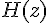 относительно частотной оси аналогового фильтра, что делает переходную область цифровых ФНЧ более крутой
Порядок проектирования фильтра:
Пример:
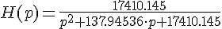
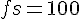
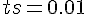
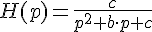
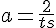
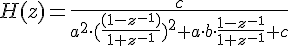
умножаем всё на 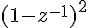
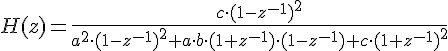
После преобразований получаем:
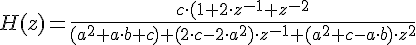
Разделим числитель и знаменатель на 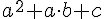
Получаем 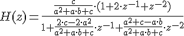
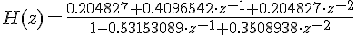
Замечание: метод билинейного преобразования может привести к повышению порядка числителя
Уравнение фильтра:
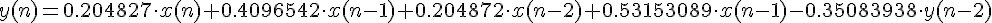
Если частота дискретизации достаточно велика то метод билинейного преобразования позволяет получить фильтры с практически точно совпадающими параметрами частотной характеристики. В случае необходимости можно перед началом проектирования провести коррекцию частоты среза аналогового прототипа